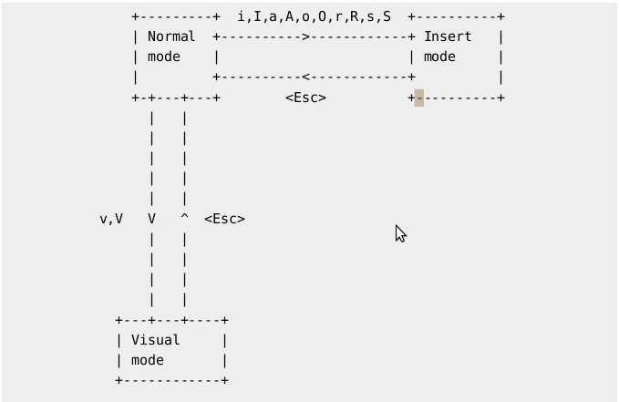

My Vim wiki.
Table of Content
Vim基础
Vim的模式
TODO: Vim总共有5种模式？分别是 NORMAL、INSERT、VISUAL、VISUAL BLOCK、(Replace Mode?)
三种常见的模式：
- Normal Mode
- Insert Mode
- Visual Mode
Normal mode和Insert Mode的切换有Append，Insert，Replace，Subsitute 记作AIRS，这种记忆方法特别方便，英文单词的意思是空气。
vim在命令模式和输入模式的切换可以通过光标位置和形状的变化观察，以及部分编辑器下方的状态栏会显示。


Vim的默认变量
常量？
| X量 | Meaning | 备注 |
|---|---|---|
| $MYVIMRC | 默认路径下的vimrc文件 |
Vim中的按键对照表
| Key | 在Vim中的表达 | 备注 |
|---|---|---|
| Enter | ||
| no operation | 即无操作 |
Vim设置(set)
| 命令 | effect | 备注 |
|---|---|---|
| set cursorline | 高亮当前行 | |
| set wrap | 自动换行(文字不出界) | （貌似vim8已经是默认打开的了） |
| set showcmd | 显示按键命令 | （貌似vim8已经是默认打开的了） |
| set wildmenu | 显示命令补全菜单 | （貌似vim8已经是默认打开的了） |
| set hlsearch | 搜索结果高亮显示 | （貌似vim8已经是默认打开的了） |
| set incsearch | 边输边高亮 | （貌似vim8已经是默认打开的了） |
| set ignorecase | 搜索时，忽略大小写 | |
| set smartcase | 搜索时，智能大小写 | 即当搜索内容含有大写时，则以区分大小写的模式搜索。 |
Vim配色
本人使用过两种第三方配色方案，snazzy和solarized。
由于
snazzy在windows下的兼容性好像不好，透明背景功能使用不了（次要），主要还是会对vimrc文档中的备注显示成斜体，windows下的GVim斜体很不清楚，而且最后一个字符经常显示不全，所以弃用了。
安装方法：一般情况下，安装配色只需要下载配色文件配色名.vim到Vim中用于存放配色文件夹~/.vim/colors/，如果是Windows则是在 <your-vim-dir>\vimfiles\colors\。部分配色文件可通过插件安装方法进行安装。
安装完成后，使用:colorscheme 配色名更改配色。如果需要每次打开Vim自动使用配色文件，则需要在vimrc文件中加入colorscheme 配色名保存。
Windows用插件管理器安装，配置好vimrc文件后，如果每次运行都报错“没有找到该配色文件”，可用手动安装方法，把配色文件放置在
<your-vim-dir>\vimfiles\colors\目录解决。
与选中有关的操作(y d x c)
即选中内容后，对内容进行编辑的操作，包括复制、剪切（删除）、添加内容等。
Vim需要编辑选中内容，有以下几种办法。
- 先选中后操作
- 不选中的情况下操作
1.先选中后操作
通过Visual Mode可以选中内容。选中后可以使用以下操作：
y复制d剪切x剪切一个字（如果多选则剪切多个，和d相同）c剪切，并进入Insert Mode
另一种形式的选中后操作：多行操作
Shift+v进入行选中的Visual Mode，选中多行后，使用:'<,'>normal 内容进行多行编辑
例如备注多行python代码（即在行首添加“# ”）
1 | :'<,'>normal I# |
Ctrl+v进入Visual Block Mode，之后光标移动可以选中垂直区域的内容，Block可以理解成“方块”，方块可以是长方型或正方型，例如选中位于不同行的第10-15个字符，同时进行y、d、x、c等操作。
利用Ctrl+v还可以多行的同一位置添加内容，同样以备注多行python代码为例，在需要备注的行行首使用Ctrl+v选中这些行的第一个字符，然后使用大写I输入#，最后按
除了大写I在选中的Block前面加入内容，还可以用大写A在后面加入内容，操作方法相同。
2. 不选中的情况下操作
不选中，但是光标要在需要编辑的行或者单词上。
yy复制当前行dd剪切当前行cc剪切当前行，并进入Insert Mode
in
下面开始是重点，这里的
i是”in”的意思。
yiw复制当前单词diw剪切当前单词ciw剪切当前单词，并进入Insert Modeyi"复制光标所在（或光标后面）的第一对双引号内的内容di"剪切光标所在（或光标后面）的第一对双引号内的内容ci"剪切光标所在（或光标后面）的第一对双引号内的内容，并进入Insert Mode
同理可把"，替换为'
yi{复制光标所在大括号内的内容di{复制光标所在大括号内的内容ci{复制光标所在大括号内的内容，并进入Insert Mode
同理可把{，替换为} [ ] ( ) < >
and?
a for “and”
把上面”in”的所有内容中的i改为a，则可连同符号一同操作
例如 hello "how are you" 中使用 di" 会变成 hello ""
如果改成 hello "how are you" 中使用 da" 会变成 hello，连同双引号一同删除了。
find
f for “find”
平时我们使用f或者F，是在当前行向后/向前搜索字符。
例如： 在hello "how are you"中，如果我们的光标在行首，使用fr，光标会移动到中间的字母”r”上。
我们可以使用yf df cf 后面接字符来进行快速修改。
还是上面的例子，在hello "how are you"中按dfo可快速删除由光标开始到第一个”o”的内容，结果是"how are you"。
tab 标签页
- tab标签页命令
| Command | effect | 备注 |
|---|---|---|
| :tabe | 新建空标签页 | 等同:tabnew |
| :tabe 文件名 | 在新标签页打开文档 | 等同:tabnew |
| :tabs | 显示所有标签页 | |
| :tabn | 下一个标签页 | |
| :tabp | 上一个标签页 | |
| :tabc | 关闭当前标签页 | |
| :tabo | 关闭其他标签页 | |
| :tabn n | 切换到第n个标签页，比如 :tabn 3 切换到第三个标签页 | |
| :tabm n | 把当前标签移动到第n个位置 | 貌似是从0开始? |
| :tabfirst | 切换到第一个标签页 | |
| :tablast | 切换到最后一个标签页 | |
| :tab help | 在标签页打开帮助 | |
| :tab drop |
如果文件已被其他标签页和窗口打开则跳过去，否则新标签打开 | |
| :tab split | 在新的标签页中打开当前窗口里的文件 | |
| :tab ball | 将缓存中所有文件用标签页打开 | |
| :set showtabline=? | 设置为 0 就不显示标签页标签，1会按需显示，2会永久显示 |
| Key | effect | 备注 |
|---|---|---|
| gt | 切换到下一个标签页 | |
| gT | 切换到上一个标签页 | |
| ngt | 切换到第n个标签页，比如 2gt 将会切换到第二个标签页 |
- Vimrc标签页设置
1 | " tab标签页快速跳转及新建、删除 |
分屏
分屏命令，可以把一个窗口分成两个部分，使Vim可以同时编辑多个文件。
- 分屏命令
| 命令 | 英文 | 功能 |
|---|---|---|
| :sp [文件名] | split | 以当前窗口的水平中线增加一个分屏 |
| :vsp [文件名] | vertical split | 以当前窗口的垂直中线增加一个分屏 |
| :set splitright | 设定为：水平分屏后，光标自动移动到右边的窗口上 | |
| :set nosplitright | 设定为：水平分屏后，光标不移动（默认在左边的窗口） | |
| :set splitbelow | 设定为：垂直分屏后，光标自动移动到下边的窗口上 | |
| :set nosplitbelow | 设定为：垂直分屏后，光标不移动（默认在上边的窗口） |
- 切换分屏窗口
分屏窗口都是基于
CTRL W这个快捷键的，w对应的英文单词是window。
按了CTRL W之后，再按下面的按键
| 命令 | 英文 | 功能 |
|---|---|---|
| w | window | 切换到下一个窗口 |
| p | previous | 切换到上一个窗口 |
| r | reverse | 互换窗口 |
| c | close | 关闭当前窗口（但是不能关闭最后一个） |
| q | quit | 退出当前窗口，如果是最后一个，则退出Vim |
| o | other | 关闭其它窗口（除当前以外的所有） |
| t | top | 移动到最top的窗口（最左上） |
| b | below | 移动到最below的窗口（最右下） |
| h | 光标跳至当前窗口的左边窗口上 | |
| j | 光标跳至当前窗口的下边窗口上 | |
| k | 光标跳至当前窗口的上边窗口上 | |
| l | 光标跳至当前窗口的右边窗口上 | |
| H | 当前窗口移到最左边 | |
| J | 当前窗口移到最下边 | |
| K | 当前窗口移到最上边 | |
| L | 当前窗口移到最右边 | |
| T | tab | put current window into a new tab |
- 调整窗口大小
按了CTRL W之后，再按下面的按键
| 命令 | 英文 | 功能 |
|---|---|---|
| + | 增加窗口高度 | |
| - | 减少窗口高度 | |
| > | 增加窗口宽度 | |
| < | 减少窗口宽度 | |
| = | 等分窗口大小 |
调整窗口宽高的命令可以和数字连用，例如按：
5CTRL W+等于连续 5 次增加高度。
- Vimrc分屏设置
1 | " 快捷分屏，并把光标跳到新分出来的窗口上 |
录制功能
录制： q + 自定义的宏名字（由数字和字母组成）
调用： @ + 完成录制的宏名字
这里我将此功能录制的成品称为“宏”，方便理解，后续找到官方叫法再纠正。
Vim提供录制功能，可把一段操作录入到一个自定名字的宏内。宏可被反复调用，提供重复性工作的效率。
举例说明：
下面有5行网站名，现在要批量编辑成 www.网站名.com 的格式。
1 | sina |
- 光标移动到第一行的第一个字母s
- 按
qa开始录制，这里把录制内容寄存在名为a的宏内。此时可见到左下角显示“记录中”。 - 开始输入需要录入的内容，这里的思路是完成一行的修改操作，并移动到下一行。
- 大写
I在行首插入，然后输入www.，按<ESC>回到Normal Mode。 - 大写
A在行尾插入，输入.com，按<ESC>回到Normal Mode。 j下移一行，然后按0到达行首。所以这里总输入是：
Iwww.<ESC>A.com<ESC>j0
- 大写
- 再按一次
q，表示录入完成，可随时调用宏a了。 - 由于此时第一行已由我们手动修改完毕，光标位于第二行baidu的行首。使用
@a调用刚录好的宏，Vim就会自动帮我们修改好第二行，并把光标移动到第三行行首。 - 使用
3@a，调用宏a三次，完成剩下三行的修改。
Vim应用
简单功能
撤销
撤销上一个命令
按键： u（小写）
模式： Normal
撤销最后编辑的一行的所有修改
按键： U（大写）
模式： Normal
光标移动
按键： h、j、k、l（小写）
模式： Normal
将光标向对应方向移动一格，h左、j下、k上、l右
按键： 0（数字）
模式： Normal
光标移到行首
按键： ^（shift 6）
模式： Normal
光标移到行首的第一个非空白字符的位置
按键： 0（数字）
模式： Normal
光标移到行首
按键： $（shift 4）
模式： Normal
将光标移到当前行的行尾
按键： f
模式： Normal
f字符，光标移到当前行的下一个匹配的“字符”上
例如输入
fa，则跳转到当前光标所在行的下一个”a”上，如果没有则不进行任何操作
按键： F
模式： Normal
F字符，光标移到当前行的下一个匹配的“字符”上
例如输入
Fb，则跳转到当前光标所在行的下一个”b”上，如果没有则不进行任何操作
按键： #
模式： Normal
光标移到上一个匹配的word上
按键： *
模式： Normal
光标移到下一个匹配的word上
替换
替换当前行的第一个匹配
1 | :s/old/new |
替换 old 为 new（以下相同）
替换当前行的所有匹配
1 | :s/old/new/g |
替换两个指定行之间出现的每个匹配串
1 | :#,#s/old/new/g |
其中 #,# 代表的是替换操作的若干行中首尾两行的行号。
替换整个文件中的每个匹配串
1 | %s/old/new/g |
找到整个文件中的每个匹配串，并提示是否替换
1 | :%s/old/new/gc |
复杂功能
Open Recent
1 | :bro old |
完整命令：
:browse oldfiles
TODO: 怎么清空这个列表，还没找到解决办法。
保存Vim当前打开的所有页面
有时我们需要休息关闭Vim或者电脑，同时编辑好几个文档在下次打开Vim时要逐一打开。为了方便下次打开Vim时，可以恢复上一次关闭Vim时的编辑状态，我们可以使用session功能。
1 | " 保存当前界面为一个session |
使用:mksession命令，会默认在~目录保存一个Session.vim文件，用于存放Vim当前打开的窗口和文件信息。
可以使用:mksession 文件名 自定义保存。
下次打开Vim时，使用:source 文件名进行恢复，使用默认保存的话则是:source Session.vim。
在当前位置输入文件名
方法一：
- 在需要插入位置进入Insert模式
- 按
CTRL+R，此时光标处变成双引号" - 按
%键，即可直接插入当前文件名
方法二：
- 在需要插入位置进入Insert模式
- 按
CTRL+R，此时光标处变成双引号" - 按
=键，然后输入表达式expand("%:t")如果不需要后缀名，则输入
expand("%:t:r")
—
—
—
—
—
未整理
| 所在模式 | 键 | 英文 | 功能 |
|---|---|---|---|
| w | word | 将光标向右移一个单词 | |
| b | back | 将光标向左移一个单词 | |
| e | end | 将光标移到单词尾部 | |
| [Return] | 将光标移到下一行的行首 | ||
| [Spacebar] | 将光标向右移动一位 | ||
| [Backspace] | 将光标向左移动一位 | ||
| gg | go | 文件顶部 | |
| G | go | 文件末尾 | |
| 数字gg（或 数字G） | go | 移动到第 “数字” 行 | |
| zz | 滚动全文，令光标所在行处于屏幕中央 | ||
| zt | z top | 滚动全文，令光标所在行处于屏幕最上一行 | |
| zb | z bottom | 滚动全文，令光标所在行处于屏幕最下一行 | |
| :数字 | 移动到 数字 对应行数 | ||
| H | Head | 屏幕顶部 | |
| M | Middle | 屏幕中间 | |
| L | Low | 屏幕底部 | |
| % | 各种括号的匹配及切换 包括： ( ) 、 [ ] 、 { } | ||
| { | 上一段 | ||
| } | 下一段 | ||
| [Ctrl-e] | 向下滚动一行（光标不动？） | ||
| [Ctrl-y] | 向上滚动一行（光标不动？） | ||
| [Ctrl-d] | down | 将光标向下移到文件尾，通常每次移动12行 | |
| [Ctrl-u] | up | 将光标向上移到文件头，通常每次移动12行 | |
| [Ctrl-f] | forward | 向下翻页（将光标向下移到文件尾，通常每次移动24行） | |
| [Ctrl-b] | back | 向上翻页（将光标向上移到文件头，通常每次移动24行） |
注意：在Insert Mode下避免使用光标键（箭头键）。因为在某些系统中，光标键被解释为普通的ASCII 字符。如果在文本输入模式下使用光标键，那么对应的ASCII字符将被插入文件中。